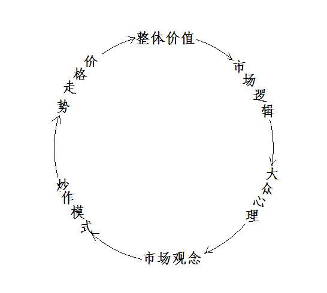

第331篇•纵论选股的逻辑与思路
谷为陵
我写完上篇博文《第330篇•再论牛熊之辩》后，至今已有10天，上证指数还在一个标准的下降通道内运行，而创业板指数在上周五却再次创出新高，创业板的牛气估计已经被市场越来越多的投资者感受到了。
我今天的重点不是谈论大盘，而是要谈一下选股的逻辑和思路。因为现在市场在严重分化，既体现为不同的股票市场在分化，比如，创业板在走牛，而沪指在走熊，也体现为个股的分化，如，医药股、传媒股、以及以欧菲光、富瑞特装等为代表的某些新兴行业股持续上涨，而以钢铁股、有色金属股、航运股为代表的强周期股则持续下跌。
可以说，现在的市场与个股的分化是达到了A股历史上的一个极端状态。这样的分化行情，最终会发展成为怎样的结果？从逻辑上分析，无非有三种可能的情况：一是继续分化，创业板和强势股继续上涨，市场与个股的走势彻底分离，该牛的牛，该熊的熊，两类市场与股票各自属于不同的世界，股价的趋同性彻底失效。二是股市最终整体走牛，那些强势市场和强势股的上涨，最终会带动沪指的上涨，并使得大多数股票的股价出现上涨，从而体现出整体牛市的状态，这是股价趋同性作用的结果。三是股市最终整体走熊，那些强势市场和强势股的上涨，因没有其它市场和大多数股票的配合，且不敌其它市场和大多数股票的继续下跌，最终使得创业板和那些强势股出现补跌，从而使股市再次出现整体熊市，这也是股价趋同性作用的结果。
市场会如何选择？这可从市场的基本逻辑进行推导。推导的出发点，就是研究强势市场和强势股的上涨的基本动力是什么，这些基本动力能否独立于其它市场而持续存在。假若这些基本动力能够持续存在，那么，创业板与大多数强势股的强势就可持续，则或者可继续维持分化行情，或者可将股市整体带动起来；假若这些上涨的基本动力不能够持续存在，那么，创业板与大多数强势股的强势就很难维持，则市场最多维持一个弱的分化行情，而股市的整体牛市则基本不可能。
股市与个股上涨的基本动力是什么？我认为，就是以股票的整体价值为基础的一个正反馈环：

我需要对以上正反馈环中的概念进行一下解释：
整体价值：整体价值=内在价值+投机价值。我说过，整体价值的概念是我的发明，关于整体价值的问题，我以前讲过多次了，在此不再赘述。
市场逻辑：市场逻辑就是市场炒作股票的理由，其基本依据是根据股票整体价值的高低而给股票进行定价，整体价值高的股票则股价高，整体价值低的股票则股价低，由此形成股价的涨跌。
大众心理：大众心理来自于市场逻辑，但却不是对市场逻辑的简单的一次性的反射反应，很可能是多次的折射反应。这就如参加选美比赛时的心理。你首先要选出你认为最美的，这是第一层次的反射反应。但是，你认为的最美的，并不意味着是大家最终选出的最美的，为此，你就要推测其他人是怎么想的，或者说大众心理是怎样的，这就是第二层次的折射反应。当然，还存在其它更多的层次的反应，但不管反应过程是怎样的，女人的美一定是基础，大家不会同时选出一个最不美的作为冠军，这是一个基本的选美逻辑。当然，这不包括那些被潜规则操纵的选美比赛。股市的情形与此相同，市场逻辑是大众心理的基础，众人看好的股票，基本上应该是整体价值高的股票，对于无价值股票的恶炒的情况虽然存在，但不代表市场的主流，在一个规范而有效的市场更是如此。
市场观念：大众心理能够导出市场观念。市场观念就是对于市场的整体看法，其集中体现在对于市场主流热点的形成方面。我们知道，除了在熊市的主跌浪，股市没有炒作热点，在其它任何时候，只要股市还有比较活跃的交易存在，就一定会形成市场热点。比如，现在股市的市场观念就是炒创业板、炒医药股与某些新兴行业股票等，而不炒那些强周期股。
炒作模式：由市场观念可以导出炒作模式。炒作模式是指炒作的手法和方式，是对于市场观念在操作层面的具体体现。比如，市场对于长期成长股是采用长期持续炒作的手法，这类股票只要出现回调就是买入机会，如天士力等长期大牛股，而对于题材股、概念股是采用短期爆炒的手法，股价往往是暴涨暴跌。另外，对于那些非市场热点的强周期股等，则市场选择的是不断卖出，导致股价持续下跌的“炒作”模式。这些炒作模式往往是不断重复的，形成了较为固定的套路，根据这些模式可以发展出相应的操作方法。
价格走势：股价因被炒作而出现上涨，而股价上涨可以对于股票的整体价值产生反作用，使得股票价值出现新的提升。有了这个注入的新的价值，就改变了原有的正反馈环的在整体价值一项上的初始输入条件，形成在新的输入价值条件下的正反馈环，造成了蝴蝶效应，如此反复不已，直至正反馈环最终因过度炒作而脱离价值的支撑而崩溃为止。价格在下跌的时候，其正反馈环的过程正好相反。
关于股价上涨能够提升股票价值的问题，是一个很重要的问题。索罗斯的反射理论已经谈到过价格上涨对于价值的影响的问题，但他主要讲的是价格影响内在价值的问题。比如，在股价涨高后，上市公司可以高价增发，以此增加公司的实力和价值，这是直接的好处。另外，股价高企可以提升公司的公众形象，于公司的业务发展有利，这是间接的好处。
应该注意的是，我所讲的价格影响价值的问题，并不局限于内在价值的范畴，在A股市场，价格对于价值的影响，更多的是体现在对于投机价值的影响方面。价格对于投机价值的影响分为三个层次：
一是市场上涨对于股价的影响，当市场上涨时，大多数股票会随股市上涨而上涨，这体现为市场广度增加。所以，在股市上涨后，就给股票打开了新的上涨空间，相当于给股票注入了新的投机价值。
二是板块上涨对于股价的影响，凡是热门板块中的股票，股价趋同性是非常明显的，基本上会被一网打尽，比如，前两年的黄金板块和稀土板内的股票，都被爆炒了好几轮。所以，当热门板块大涨后，就给该板块内的股票注入了新的投机价值，股价的上涨空间被打开。板块内股票轮番上涨，应该是体现了市场的深度。
三是股价上涨对于股价自身的影响，体现为自我增强和自我实现。比如，在股价被炒起来形成上涨趋势后，就会被更多的投资者关注并介入，就使股票的价格上涨空间被进一步打开，或者说股票的投机价值空间被打开，使得价格趋势拥有自我增强和自我实现的能力，使价格继续上涨。价格对于投机价值的影响的最直接证据，就是股票市盈率的提高。
在以上的正反馈环中，最基础的一环就是整体价值。根据整体价值的定义，整体价值=内在价值+投机价值。内在价值很好理解，而投机价值就不太好理解。投机价值可分为三个区间层次：合理投机价值区间、预期投机价值区间、泡沫投机价值区间，分别简称为合理区间、预期区间、泡沫区间。
股价与内在价值之间只有三种变化关系：价值回归、价值成长、价值重估。
价值回归是指股价跌破内在价值而出现折价的时候，股价有回升到内在价值附近的倾向，此所谓价格与价值保持一致性。价值回归是价值投资的最基本方式，即，买入那些价值低估的股票，长期持有直至价格上涨到内在价值之上为止。
价值成长是指股票内在价值持续增长，而使股价跟随内在价值的增长而不断上涨。在价值增长的情况下，股价并不要求一定要跌破内在价值，股价可以在内在价值之上出现一定程度的溢价，在股价保持与内在价值相对稳定的溢价率的情况下，只要内在价值持续增长，股价就可以与内在价值保持同步地持续上涨，最终发展成为长期大牛股。
价值重估是指在内在价值不变的情况下，通过提高股票的投机价值而使股价上涨的方式。价值重估的本质是使内在价值产生溢价，当然，这个溢价要在逻辑上显得合理才行。比如，利好题材、热门概念等，都可成为注入新的投机价值的手段。
以上谈的是理论部分，这些理论看起来很枯燥，但却是选股的合理依据。选股就是根据整体价值的三种变化而来，所有的股票无非就是分为三类：价值回归股、价值成长股、价值重估股。当然，应该注意的是，对于某些股票来说，价值的三种变化是可以叠加的，其叠加的状态如下所示：
①价值回归+价值成长
②价值回归+价值重估
③价值成长+价值重估
④价值回归+价值成长+价值重估
从以上四种整体价值的叠加组合中，最具有投资价值的是组合①，因为该组合中只含有价值回归和价值成长这两项，它们都属于投资价值范畴，而不涉及投机价值。组合②、③、④因含有价值重估一项，使该组合具有了一定的投机性，这意味着股价的上涨空间更大，但随着股价的上涨，股价的风险也会增加。在以上组合中，组合④的爆发性是最强的，该组合显示股价是从低估到成长，再到高估的一个过程，股价的整体涨幅应该很大，属于中长期大牛股的范畴。
若对照以上的整体价值的单独变化以及组合变化，我们就可以对于现在股市里的股票进行较为准确的分析，看看它们是具有投资价值，还是具有投机价值，还是既具有投资价值，又具有投机价值，或者，根本没有任何价值。这两天我会举一些实例进行分析。